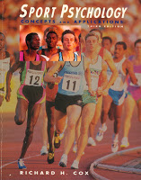

|
SPORT PSYCHOLOGY
MY RESEARCH
- High Performance - what is it? How do we achieve it?
-
- Sport Psychology Industry
-
REPORTS
- Burnout Report
- Burnout in Elite Athletes (1993)
- Sport psychology paper on burnout
- abstract:
- As a grounding framework for this paper, I will draw a continuum with burnout at one end of the spectrum and actualization at the other. Burnout should be viewed in a continuum of low to high, because it is not an all or nothing concept (Perlman and Hartman, 1981). Both retroactive and proactive measures can be taken to improve ones standing along the continuum. In this paper, I will start at the “burnout” end of the spectrum. I will define some current models of burnout, and some retroactive treatment strategies for burnout. Then I will suggest some proactive measures for burnout which involve both increasing protective factors and decreasing risk factors of burnout. I will conclude this paper with an argument for more weighted use of proactive coaching methods for elite athletes.
|

|
- Sport Psychology: Concepts and Applications, 3rd Ed.
Richard M. Cox
1994 (orig 1985) | Brown & Benchmark
- Sport Psycology CONTENTS
- sport psychology notes
- sport psychology summary notes
- instructor: Dr. R Ennis
|
back home
|